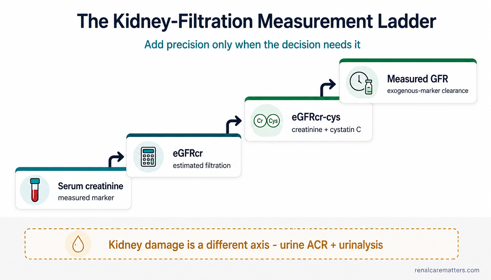

Creatinine is measured. eGFR is estimated. GFR can be measured. And filtration is only part of kidney health.
When people say "kidney function," they usually mean one thing the kidney does — filtering the blood, measured as the glomerular filtration rate (GFR). But the number on your lab report is almost never a direct measurement of that filtration. It is a serum marker plugged into a formula. Understanding the difference between what is measured, what is estimated, and what can be measured directly when it matters is the whole point of this guide.
If you remember only five things:
1. Serum creatinine is a blood marker, not a direct measurement of kidney function.
2. For most adults, serum creatinine placed into a validated estimating equation — an estimated GFR (eGFR) — is the first assessment of filtration.
3. When accuracy matters or creatinine may mislead, adding cystatin C (a second blood marker) usually gives a better estimate.
4. When even that is not accurate enough for a high-stakes decision, a directly measured GFR (mGFR) using a special filtration marker can be used where available.
5. A complete kidney check also asks whether the kidney is damaged — especially with a urine albumin-to-creatinine ratio (uACR) — because normal filtration does not rule out kidney disease.
Four things almost everyone gets wrong.

The kidney-filtration measurement ladder. Four ascending steps add precision only when the clinical decision needs it: serum creatinine (a measured marker), eGFR from creatinine (an estimate), eGFR from creatinine plus cystatin C (usually the best routine estimate), and measured GFR (clearance of an injected filtration marker). A separate horizontal rail underneath shows that urine ACR is not a rung on the ladder — it measures kidney damage, a different axis, not filtration.
- GFR
- Glomerular filtration rate
- eGFR
- Estimated glomerular filtration rate
- uACR
- Urine albumin-to-creatinine ratio
Your kidneys do far more than filter.
Before any test makes sense, it helps to know what the kidneys actually do. Filtration — cleaning waste and excess fluid out of the blood — is the headline job, and it is the one GFR measures. But it is not the whole story. The kidneys also fine-tune water and sodium balance, hold potassium in a narrow safe range, manage the body's acid-base balance, help control blood pressure through the renin system, make the hormone erythropoietin that tells the marrow to build red blood cells, and switch on the active form of vitamin D that keeps bones and minerals healthy.
That matters for interpreting a test, because a single filtration number cannot tell you how well those other jobs are going. Someone can have a filtration number in one range while anemia, bone-mineral problems or acid build-up quietly develop. This is exactly why the international kidney body — Kidney Disease: Improving Global Outcomes (KDIGO) — advises using the term GFR for filtration specifically, and the broader term kidney function(s) for the totality of what the kidneys do.
The key sentence to hold onto
GFR is the best-established single index of filtration — but it is not a complete inventory of everything the kidneys do. No routine blood test captures "percent kidney function," because there is no single number that could.
What "GFR" actually means.
Imagine a substance that rides into the kidney in the blood, slips freely through the glomerular filter, and is then neither added back nor pulled out by the tubules downstream. How fast it disappears from the plasma tells you how much plasma the glomeruli are clearing of that substance each minute. That flow — millilitres of plasma cleared per minute — is the glomerular filtration rate. GFR is a flow idea, a clearance, not a static "level."
On an adult lab report, eGFR is written as mL/min/1.73 m². The "1.73 m²" is a conventional body-surface-area index used to make results comparable between people of different sizes — it is not your literal body surface area, and it is not a percentage. Two more honest caveats: your true physiological GFR drifts over the day and over your life, and even a directly measured GFR carries some biological and measurement variability. There is simply no routine test that stamps a precise "percent kidney function" on a person.
Why "percent kidney function" keeps causing harm
Translating "eGFR 60" into "60% kidney function" is one of the most common and damaging errors in kidney care. It invents a precision that does not exist, frightens people whose filtration is actually stable, and hides the fact that the number is an estimate. eGFR 60 means "an estimated filtration of about 60 mL/min per 1.73 m² of body surface" — nothing more, and nothing about a percentage.
Add precision only when the decision needs it.
There is not one "kidney test." There is a ladder. Each rung is more accurate — and usually more expensive or more involved — than the one below it. Most people never need to climb past the second rung. You move up only when the marker below might be misleading, or when a decision is important enough to justify the extra accuracy.
Serum creatinine — a measured marker
A blood test that is cheap and everywhere. It is a real measurement, but of a marker — creatinine is influenced by more than filtration, so on its own it cannot be read as kidney function.
eGFR from creatinine (eGFRcr) — an estimate
Creatinine plus your age and sex, run through a validated formula. This is the appropriate first estimate of filtration for most adults.
eGFR from creatinine + cystatin C (eGFRcr-cys) — a better estimate
Adds a second blood marker, cystatin C. Because the two markers are thrown off by different things, combining them lets each compensate for the other — usually the most accurate routine estimate.
Measured GFR (mGFR) — the reference method
A known dose of a special (exogenous) filtration marker is given, then timed blood and/or urine samples measure how fast the kidney clears it. Used for high-stakes decisions where an estimate is not accurate enough.
A parallel rail — not a fifth rung
Kidney damage is assessed separately, mainly with a urine albumin-to-creatinine ratio (uACR) plus urinalysis, and sometimes imaging. This runs alongside the ladder. Do not picture uACR as a way of measuring GFR — it answers a different question entirely.
Creatinine: useful precisely because it is imperfect but predictable.
Creatinine is a waste product your muscles make as they burn a fuel called creatine. It travels in the blood and is mostly cleared by the kidneys, with a small extra amount actively pushed out (secreted) by the kidney tubules. Its level at any moment is a balance: production → blood → glomerular filtration → a little tubular secretion → urine. Anything that shifts that balance moves the number — and because eGFR is calculated from creatinine, the estimate inherits whatever moved the marker.
That is why the same creatinine can mean different filtration in different people. A muscular young man and a frail elderly woman with the same creatinine almost certainly have very different true GFRs.
| Can raise creatinine without an equal fall in GFR | Can lower creatinine and make GFR look better than it is |
|---|---|
| High muscle mass / very muscular build | Sarcopenia (muscle loss) or frailty |
| A recent cooked-meat or fish meal | Amputation |
| Creatine supplement use | Paralysis or neuromuscular disease |
| Unusually strenuous exercise | Malnutrition / low muscle mass |
| Some drugs that block tubular creatinine secretion | A very low-meat or low-protein diet (in some contexts) |
Do not over-correct into complacency
The list above is about marker effects. But dehydration, blood-flow (hemodynamic) changes, urinary obstruction and genuine kidney injury can truly change filtration — and those must never be waved away as "just a muscle or diet effect." A creatinine rise is a signal to interpret in context, not to explain away.
Medicines that change the creatinine number
A few drugs move creatinine through the marker, not through damage — though this is illustrative, not a complete list:
- Trimethoprim (an antibiotic) can reversibly block the tubular secretion of creatinine, nudging the number up.
- Cimetidine (an acid-reducer) and some antiretroviral (HIV) drugs can alter how creatinine is handled.
- Fenofibrate commonly causes a reversible creatinine rise, but its mechanism and interpretation are more complex — we cover it in a dedicated guide.
- ACE inhibitors / ARBs (blood-pressure and kidney-protective drugs) and sodium-glucose cotransporter-2 (SGLT2) inhibitors (a diabetes and kidney-protective class) can cause an early, expected eGFR dip from a blood-flow change — which is not the same as toxic, structural injury.
What none of these means is "this drug does not affect GFR." Some change the marker; some change filtration functionally; the honest answer depends on the drug and the person, which is why you should never stop a prescribed medicine to "clean up" a kidney test on your own.
How to prepare for a creatinine / eGFR test.
A short, honest checklist
Follow your lab's instructions. For an ordinary routine test, fasting is not universally required just for eGFR — do what your clinician or laboratory tells you.
For a precise comparison, skip cooked meat or fish for at least 12 hours beforehand when feasible. KDIGO cites evidence of a transient creatinine rise of about 0.23 mg/dL after a cooked-meat meal in one study — enough to move eGFR meaningfully.
Avoid unusually strenuous exercise right before a comparison test. If it happened, say so and interpret in context — there is no universal "days off exercise" rule to invent.
Do not water-load or dehydrate yourself to "improve" the number. Test under your usual conditions unless specifically told otherwise.
Tell your clinician about creatine supplements, high-protein diets, recent illness and all your medicines.
Do not stop a prescribed medicine just to get a "clean" kidney test unless the prescriber tells you to.
For tracking a trend, testing under comparable conditions — and, when practical, at the same laboratory using the same equation — makes the numbers easier to interpret.
Cystatin C: a second lens with different blind spots.
Cystatin C is a small protein made steadily by nearly all the body's nucleated cells. Like creatinine, it is filtered at the glomerulus, so its blood level can serve as a filtration marker. Its great advantage is that it is thrown off by a different set of non-filtration factors than creatinine — crucially, it does not depend on muscle mass.
Here is the useful metaphor: two imperfect lenses with different distortions can focus more accurately together than either one alone. That is exactly why the combined estimate, eGFRcr-cys, is usually the most accurate routine option. KDIGO 2024 recommends that in adults at risk for CKD, when cystatin C is available, the GFR category should be estimated from the combined equation (a strong, 1B recommendation), and that the combined estimate be used when creatinine alone is less accurate and the result affects a clinical decision (1C).
Do not oversell cystatin C
Cystatin C is not free of non-filtration influences. Its level can be shifted by adiposity (body fat), smoking, an under- or over-active thyroid, high-dose steroids, and chronic inflammation or serious illness. So never say "cystatin C is unaffected by non-kidney factors" — it simply has different factors, which is what makes combining it with creatinine so powerful.
When cystatin C is especially worth adding
Based on the situations KDIGO highlights, a combined or cystatin-based estimate is particularly helpful when creatinine is likely distorted:
| Situation | Why creatinine alone may mislead |
|---|---|
| Unusual muscle mass or body build | Creatinine tracks muscle, not just filtration |
| Marked muscle loss, eating disorder, or severe frailty | Low creatinine production hides reduced GFR |
| Bodybuilder / extreme exercise / creatine use | High creatinine production overstates a problem |
| Amputation or spinal-cord injury / paralysis | Altered muscle mass distorts creatinine |
| Class III obesity | Both markers are affected — the combined estimate is often preferred |
| Cancer, heart failure, or cirrhosis | Both markers can be distorted; even combined estimates may fall short in severe disease |
| Drugs that alter creatinine secretion, when a filtration decision matters | The marker moves without a true GFR change |
What if creatinine-eGFR and cystatin-eGFR disagree?
They often do. In the studies KDIGO cites, substantial discordance between the two — a gap of at least 15 mL/min/1.73 m² or at least 20% — shows up in roughly a quarter to a third of people. That is not a failure of the tests; the direction and size of the disagreement is itself clinically informative. And when the two markers disagree, the combined equation (eGFRcr-cys) is generally more accurate than either marker alone.
Kidney health has a second axis: urine albumin.
This is one of the most important turns in the whole guide. Filtration (measured as GFR) is one axis of kidney health. Damage — the kidney's filter leaking a protein called albumin into the urine — is a separate axis, measured by the urine albumin-to-creatinine ratio (uACR). The two do not move in lockstep.
eGFR
How much plasma the glomeruli filter per minute. Falls as filtering capacity is lost.
urine ACR
How much albumin leaks into the urine. Rises when the filter is injured — often before filtration falls.
Because they are separate, a person can have a preserved eGFR with heavy albuminuria and genuinely important kidney disease, or a reduced eGFR with little albuminuria, which points toward a different cause and risk picture. This is why a filtration number alone can never "rule out" kidney disease — and why uACR must never be folded into an "eGFR percentage."
KDIGO albuminuria categories
| Category | uACR (mg/g) | uACR (mg/mmol) | Label |
|---|---|---|---|
| A1 | <30 | <3 | Normal to mildly increased |
| A2 | 30–300 | 3–30 | Moderately increased |
| A3 | >300 | >30 | Severely increased |
How to collect a uACR properly
A first-void morning, midstream sample is preferred when feasible. A random ACR of 30 mg/g (3 mg/mmol) or higher should be confirmed with a later first-morning sample. Menstruation, visible blood in the urine, vigorous exercise and a symptomatic urinary infection can all raise urine albumin or protein and confound the result. And when a quantitative ACR can be obtained, do not rely on a dipstick alone to judge how much albumin is leaking.
eGFR categories — and why one low number is not a diagnosis.
KDIGO grades filtration into six GFR (G) categories. They are a useful shorthand, but a category is not automatically a disease.
| G category | eGFR (mL/min/1.73 m²) | KDIGO description |
|---|---|---|
| G1 | ≥90 | Normal or high |
| G2 | 60–89 | Mildly decreased |
| G3a | 45–59 | Mildly to moderately decreased |
| G3b | 30–44 | Moderately to severely decreased |
| G4 | 15–29 | Severely decreased |
| G5 | <15 | Kidney failure |
Chronicity is part of the definition
G1 or G2 on its own does not establish CKD — you also need another marker of kidney damage (such as albuminuria). And a single eGFR under 60 does not automatically mean chronic disease. Chronic kidney disease requires an abnormality of kidney structure or function present for at least 3 months, with implications for health. After an incidental low eGFR, a raised ACR, or blood in the urine, the right move is to repeat and confirm and look at the context — not to reflexively stamp "chronic" on one result, which might be a temporary, acute process.
Trends beat snapshots — but trends have noise too.
One value is a snapshot; a series is a story. But even a series wobbles, because both the biology and the lab have day-to-day variability. KDIGO gives practice points to separate real change from noise in people with CKD:
- A change in eGFR of more than 20% on a follow-up test exceeds expected variability and warrants evaluation.
- After starting a blood-flow-active therapy (for example an ACE inhibitor, ARB or SGLT2 inhibitor), a GFR reduction of more than 30% warrants evaluation.
- A doubling of ACR exceeds lab variability and warrants evaluation.
Read those as evaluation triggers — reasons to look more closely — not as automatic proof of toxic injury, and never as instructions to stop a medicine on your own.
A 2026 nuance worth knowing
A 2026 longitudinal cohort (the eGFR-C study, published in BMJ) compared estimated trajectories against a directly measured GFR over three years. Combined creatinine-cystatin equations agreed with the measured GFR slope more often than creatinine-only equations — but all estimating equations still captured true progression imperfectly. The lesson is calibrated, not sweeping: dual-marker estimates track change better, yet no estimate fully replaces measurement.
When you are acutely ill, eGFR can lag badly.
Steady-state math, non-steady-state patient
A creatinine-based eGFR assumes a reasonably steady relationship between how fast creatinine is generated and how fast it is cleared. During rapidly changing kidney function — an acute kidney injury (AKI) — that assumption breaks, and the reported eGFR can lag well behind the patient's actual filtration.
So during an acute illness the important signals are different: the trend in serial creatinine values and the urine output, read together with the whole clinical picture. A steady-state eGFR equation should not be treated as an accurate real-time GFR while creatinine is rising or falling fast. Acute illness, sepsis, obstruction, volume depletion and unstable blood pressure need a clinical evaluation — not reassurance from a web calculator.
A note on evolving guidance
As of 7 August 2026, KDIGO's newest acute kidney injury / acute kidney disease (AKI/AKD) guideline was still a public-review draft, not final guidance. Clinical standards should follow the current final KDIGO AKI guideline; treat the 2026 draft only as a horizon signal, not settled recommendation.
Calculators for each rung of the ladder.
These interactive tools follow the same ladder. Every one carries a plain-language, educational-use disclaimer, runs entirely in your browser, and does not send your entered values anywhere. None of them can diagnose CKD or tell you to start or stop a medicine — they are for understanding, and the interpretation always belongs with your clinician.
Red flags that need prompt attention.
Most kidney-test concerns can wait for a routine conversation with your clinician. The following are different — when a kidney-test worry comes with any of these, seek prompt or urgent medical assessment rather than waiting for a web calculator to reassure you.
⚠️ Seek prompt medical assessment if you have:
This is a triage prompt, not a symptom-diagnosis engine. When in doubt, contact a clinician.
Common questions about kidney-function tests.
Assessing Kidney Function: Estimation, Measurement & the Two-Axis Model
Serum markers are estimated; clearance is measured; and neither substitutes for albuminuria and clinical context. This reference layer covers measured GFR, timed creatinine clearance, equation selection, drug-dosing de-indexing, and special populations — aligned to the KDIGO 2024 CKD guideline.
Serum creatinine and cystatin C are filtration markers: their concentrations reflect GFR plus non-GFR determinants (generation, tubular handling, distribution). eGFR places a marker into a validated equation; it inherits both the marker's noise and the equation's population error. When an estimate is not accurate enough for the decision at hand, a measured GFR (mGFR) — plasma or urinary clearance of an exogenous filtration marker under a standardized protocol — is the clinical reference method. Avoid the phrasing that physiological GFR itself can be measured "without error"; mGFR is the reference, not a platonic truth.
The mGFR process
Conceptually: a known dose of exogenous marker → allow distribution → timed blood and/or urine samples → calculate clearance → mGFR. KDIGO-listed markers include iohexol, iothalamate, 51Cr-EDTA (chromium-51 ethylenediaminetetraacetic acid), selected 99mTc-DTPA (technetium-99m diethylenetriamine pentaacetate) clearance protocols, and inulin as the classic historical standard. The European Kidney Function Consortium has published consensus standardization of iohexol plasma-clearance protocols, which supports mGFR quality and comparability.
A nuclear tracer image is not automatically a measured GFR
KDIGO notes that GFR assessment based on imaging of nuclear tracers is less accurate and does not recommend nuclear imaging itself as the method for measuring global GFR. Renal scintigraphy can quantify split (differential) function and drainage — a different question. When you want a global mGFR, the clearance protocol is what matters, not the picture.
Indications for mGFR (adapting KDIGO Table 10)
| Indication | Why estimation may be insufficient |
|---|---|
| Combined eGFR remains uncertain | Catabolism, serious infection/inflammation, high cell turnover, some cancers, advanced cirrhosis, heart failure, high-dose steroids, severe frailty |
| Living-kidney-donor candidacy | A one-kidney future demands accurate baseline filtration |
| Simultaneous kidney-transplant decisions | Allocation/eligibility thresholds turn on true GFR |
| High-stakes drug dosing | Narrow therapeutic index or serious toxicity, e.g. selected kidney-cleared chemotherapy (carboplatin AUC dosing) |
| Any decision needing more accuracy than eGFR provides | The precision required by the decision, not the disease label, is the trigger |
mGFR caveats — it is a measurement, with its own error
mGFR is more expensive, more time-consuming and less available; protocol and sampling times affect accuracy; low GFR may require delayed sampling; extensive edema or ascites can make plasma-clearance protocols inaccurate (urinary clearance may be preferred); and mGFR has biological and analytical variability of its own. It is the reference method, not an error-free absolute.
The 24-hour creatinine clearance: useful fallback, not gold standard.
A timed (24-hour) creatinine clearance measures clearance of creatinine — not of an ideal filtration marker — and it depends on collecting every drop of urine over the interval correctly. Both facts limit it.
| Error source | Effect on the result |
|---|---|
| Under-collection (missed voids) | Falsely low clearance |
| Over-collection / wrong timing | Falsely high or distorted clearance |
| Tubular secretion of creatinine | Systematically overestimates GFR, more so at low GFR |
| Serum creatinine changing during collection | Non-steady-state invalidates the calculation |
| Unit / timing transcription errors | Large, unpredictable error |
What KDIGO actually says
KDIGO 2024 cites a systematic review of 23 studies in which measured creatinine clearance had a mean bias of about 25%, and recommends a timed CrCl only when mGFR is unavailable and eGFRcr-cys is thought inaccurate — ideally under supervised collection. Do not market a 24-hour CrCl calculator as "more accurate than eGFR." It is a supervised fallback, not a reference standard.
Equation selection, the race-free shift, and uncertainty.
KDIGO recommends estimating GFR from a validated equation rather than interpreting serum creatinine alone, and — importantly — that race should not be used in eGFR computation. Equation choice can be regional: do not imply the 2021 CKD-EPI equations are the only valid global option. In the US, the Kidney Disease Outcomes Quality Initiative / National Kidney Foundation (KDOQI/NKF) supports the 2021 CKD-EPI race-free adult creatinine and creatinine-cystatin equations; KDIGO recognizes validated CKD-EPI and EKFC approaches and emphasizes regional validation and consistency. Precision degrades at higher GFR and in individuals with strong non-GFR determinants.
P30 — the uncertainty every eGFR carries
P30 is the proportion of estimates within ±30% of measured GFR. A performant equation has a P30 of roughly 90% — which also means about 1 in 10 estimates differ from mGFR by 30% or more. Use P30 to calibrate confidence, not to alarm.
A ±30% band around a displayed eGFR of 60 spans roughly 42–78. This illustrates population-level accuracy (P30) — it is not an individual confidence interval, and it does not mean a given patient's true GFR must lie inside this range.
Equation provenance for the site calculators
The built-in estimators use the 2021 CKD-EPI creatinine and creatinine-cystatin C equations (Inker et al., NEJM 2021), which are race-free and were more accurate in combination than either marker alone. The calculators state plainly that a locally validated regional equation or the laboratory-reported value may be preferred, and none of them uses race as an input.
Indexed eGFR, absolute GFR and Cockcroft–Gault are not interchangeable labels.
CKD staging uses body-surface-area (BSA)-indexed eGFR in mL/min/1.73 m². Drug clearance, however, relates to absolute clearance — so for patients whose body surface area differs materially from 1.73 m², de-indexing can change the dosing band. Do not silently swap Cockcroft–Gault creatinine clearance, indexed eGFR and measured GFR as if they were the same quantity.
The Cockcroft–Gault and timed-CrCl calculators on this site carry explicit banners that their output is an estimated creatinine clearance — not eGFR and not mGFR — and that weight selection in obesity or edema is clinically consequential.
When the usual number needs extra skepticism.
| Situation | Why routine eGFR may mislead | Preferred next thought |
|---|---|---|
| Frailty / sarcopenia | Low creatinine generation | eGFRcr-cys or specialist assessment |
| Bodybuilder / high muscle mass | High creatinine generation | Cystatin C / combined estimate |
| Amputation / paralysis | Low or altered muscle mass | Cystatin C or combined estimate |
| Class III obesity | Both markers have non-GFR determinants | Combined estimate; consider BSA issue for dosing |
| Cancer / catabolic illness | Both markers may be distorted | Combined estimate; mGFR if decision is high-stakes |
| Cirrhosis / advanced heart failure | Creatinine and cystatin limitations | Combined estimate; mGFR for critical decisions |
| Pregnancy | Standard eGFR equations are not validated | Serum creatinine + pregnancy-specific assessment; specialist guidance |
| Child / adolescent | Adult equations inappropriate | Validated pediatric equation, e.g. Chronic Kidney Disease in Children under-25 (CKiD U25) where appropriate |
| Age 18–25 | Transition zone | Consider adult and pediatric/young-adult validated approaches |
| Rapidly changing creatinine / AKI | Non-steady state | Serial creatinine / urine output / clinical assessment |
| Gender-diverse patient on hormone therapy | Equation sex term and body-composition/hormonal effects add uncertainty | Shared decision-making; consider cystatin/combined or mGFR at critical thresholds |
Pregnancy note
Do not expose an adult eGFR calculator as a definitive renal-function estimator for a pregnant patient. The 2025 KDIGO Women and Kidney Health conference report notes that creatinine- and cystatin-based estimating equations are not validated in pregnancy; a 24-hour creatinine clearance is commonly used as the practical reference despite its collection limitations. The site's estimator suppresses standard interpretation when "pregnant" is selected.
Tests that answer a different question
Prevent the reflex of treating every renal test as another version of eGFR.
| Test | Useful for | Does not directly provide |
|---|---|---|
| BUN (blood urea nitrogen) / serum urea | Nitrogen-balance context; part of metabolic/uremic assessment | A specific GFR (strongly affected by protein intake, catabolism, GI bleeding, volume state) |
| Urine dipstick | Screening for protein, blood and other urine abnormalities | Quantified albuminuria or GFR |
| uACR | Quantified albumin leak / kidney damage and prognostic risk | GFR |
| Urine output | Crucial acute signal, especially in AKI / volume assessment | A stable numeric GFR |
| Kidney ultrasound | Anatomy, size, hydronephrosis/obstruction, structural clues | Global GFR |
| Renal nuclear imaging | Drainage, anatomy, and/or split renal function (tracer/protocol dependent) | Automatic equivalence to a standardized global mGFR |
Emerging tubular/injury biomarkers such as NGAL (neutrophil gelatinase-associated lipocalin) or KIM-1 (kidney injury molecule-1) answer different biological questions and should not be presented as replacements for validated GFR assessment.
Worked examples
"Normal creatinine," older adult
Creatinine within the reference range but a lower-than-expected eGFR. A creatinine concentration cannot be interpreted without age, sex, equation and body composition.
Muscular patient, isolated creatinine rise
High muscle mass, creatine use, normal uACR, no acute symptoms. Do not declare CKD from creatinine alone; consider combined/cystatin assessment if it changes management.
eGFR 95 with uACR 650 mg/g
Preserved filtration does not exclude kidney disease. Confirm the albuminuria and pursue an etiologic evaluation — the damage axis is abnormal.
Discordant markers (eGFRcr 78 vs eGFRcys 49)
Look for non-GFR determinants of each; the combined equation is often the better routine estimate; a high-stakes decision may need mGFR.
Creatinine 0.8 → 1.6 mg/dL in hospital
Do not trust a steady-state eGFR as a real-time filtration measure. Assess AKI clinically with serial creatinine and urine output.
Chemotherapy dosing threshold
An estimate sitting on a high-toxicity dosing cutoff. The precision the decision demands determines whether eGFRcr-cys or mGFR is warranted.
The evidence architecture, and how to phrase it.
Match the certainty of the verb to the rung of the evidence. KDIGO guideline recommendations, implementation commentaries, equation validation studies, prognostic meta-analyses, standardization consensus and one key 2026 longitudinal cohort together support a two-axis, estimate-first, escalate-when-needed stance.
| Source | Design / status | What it supports |
|---|---|---|
| KDIGO CKD 2024 | International guideline | Initial eGFRcr; combined eGFRcr-cys when available/needed; mGFR indications; uACR; chronicity; error sources |
| KDOQI US Commentary 2025 | Expert guideline commentary | US implementation; combined-marker accuracy; mGFR for high-stakes settings |
| Inker et al., NEJM 2021 | Equation development/validation | Race-free CKD-EPI creatinine and creatinine-cystatin equations; combination more accurate |
| Wang et al., Kidney Med 2023 | 4,050 adults, 12 cohorts with mGFR | Combined estimate more accurate when creatinine/cystatin estimates discordant |
| Grams et al., JAMA 2023 | Individual-participant meta-analysis | Lower eGFR and higher albuminuria independently associate with adverse outcomes (two-axis) |
| Inker et al., JASN 2023 | Comparative equation performance | CKD-EPI vs EKFC; regional considerations — no single universal equation |
| Ebert et al., Kidney Int 2024 | International consensus | Standardization of iohexol plasma-clearance mGFR protocols |
| Scandrett et al., BMJ 2026 | Prospective cohort, iohexol reference | Dual-marker equations tracked GFR change better than creatinine-only; all imperfect |
| KDIGO 2026 AKI/AKD | Public-review draft — not final | Horizon signal only; label clearly as draft |
Evidence-strength language discipline
KDIGO 1B = strong recommendation, moderate-certainty evidence; 1C = strong recommendation, low-certainty evidence; a Practice Point is consensus/practical guidance and must not be mislabeled as randomized controlled trial (RCT)-grade. For observational accuracy/validation research, say "showed," "was more accurate," or "was associated" — not "proved improved outcomes."
The 2026 eGFR-C nuance, stated precisely
Scandrett et al. followed adults with moderate CKD and compared estimated trajectories with iohexol mGFR over three years. Among ~875 participants with baseline and year-3 data, dual-biomarker equations showed better agreement with measured GFR change (roughly 78–80% depending on equation) than CKD-EPI creatinine alone (about 73%). Do not generalize this to all populations or claim that routine cystatin monitoring has proven outcome benefit.
Assay, standardization, and the fine print.
Marker analytics
Creatinine: use isotope-dilution mass spectrometry (IDMS)-traceable assays; enzymatic methods are preferred where feasible because the Jaffe reaction is subject to non-creatinine chromogen interferences. Cystatin C: report values standardized to the ERM-DA471 / International Federation of Clinical Chemistry (IFCC) reference material so estimates are comparable across labs.
Bias, precision, P30
Bias is the systematic difference between estimated and measured GFR; precision is the spread of estimates around the reference; P30 is the percentage of estimates within 30% of mGFR. A better equation improves all three, but none reaches zero error — and mGFR is itself only a measured approximation to true physiological GFR.
Plasma vs urinary clearance & third-spacing
Plasma-clearance mGFR protocols assume predictable marker distribution; extensive edema or ascites (third-spacing) undermines that assumption, so urinary clearance may be preferred. At very low GFR, delayed sampling is needed to avoid overestimation.
Non-steady-state / kinetic GFR
Kinetic eGFR concepts exist for the non-steady state, but they are specialist/experimental support tools — not a replacement for clinical AKI assessment, and not implemented in patient-facing calculators here.
Micro-glossary
| Term | Definition |
|---|---|
| Bias | Systematic difference between estimated and measured GFR |
| Precision | Spread of estimates around the reference |
| P30 | Percentage of eGFR values within 30% of mGFR |
| Indexed GFR | Normalized to 1.73 m² BSA (used for CKD staging) |
| Absolute / de-indexed GFR | Estimate in mL/min after accounting for individual BSA (used for some drug dosing) |
| Clearance | The theoretical plasma volume cleared of a substance per unit time |
Bottom line
- Creatinine and cystatin C are markers; eGFR is an estimate; mGFR is the measured reference — keep the three distinct.
- Start with eGFRcr; add cystatin C (eGFRcr-cys) when a marker may mislead or the decision needs accuracy; reserve mGFR for high-stakes uncertainty.
- Assess the damage axis (uACR) in parallel — a normal eGFR does not exclude kidney disease.
- Do not use race in eGFR, do not call a timed CrCl the gold standard, and do not read a nuclear image as a global mGFR.
- Require ≥3 months of abnormality before labeling CKD; treat >20% eGFR change, >30% post-hemodynamic-therapy decline, and ACR doubling as evaluation triggers, not injury verdicts.